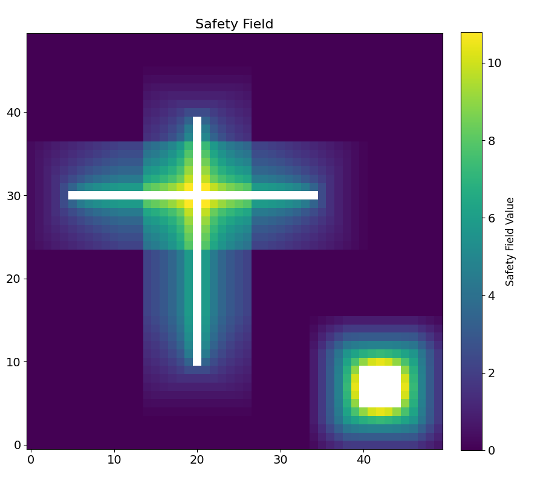
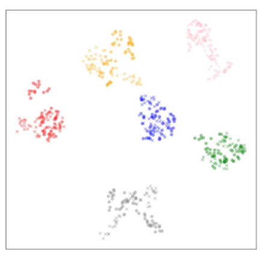

Jatin Kumar Arora
Robotics Software Engineer
About
Experience
Projects
Publications
Education
Upstreamed ↗
CV
☾ / ☀
Publications
Peer-reviewed journal articles
2026

Balancing Safety and Optimality in Robot Path Planning: Algorithm and Metric
Jatin Kumar Arora
, Soutrik Bandyopadhyay, Sunil Sulania, Shubhendu Bhasin
International Journal of Intelligent Robotics and Applications (Springer), 2026
Journal
•
arXiv
•
Project Page
2023

Low-Frequency Adaptation–Deep Neural Network-Based Domain Adaptation Approach for Shaft Imbalance Fault Diagnosis
Jatin Kumar Arora
, Sudhar Rajagopalan, Jaskaran Singh, Ashish Purohit
Journal of Vibration Engineering & Technologies (Springer), 2023
Springer